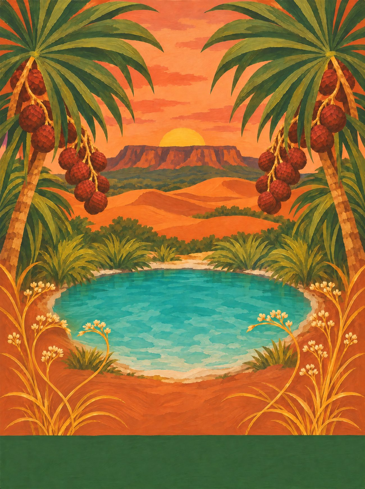
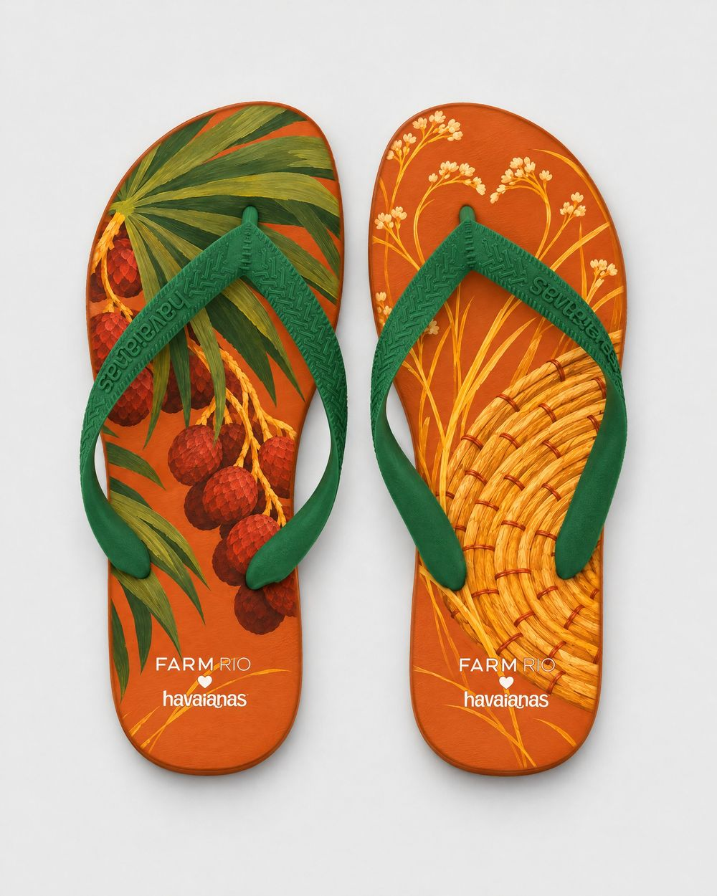
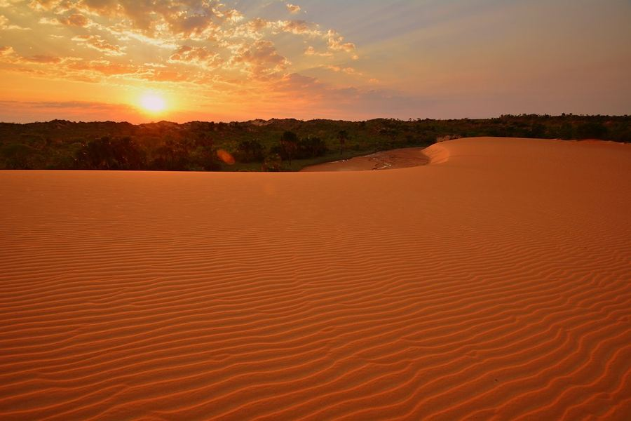
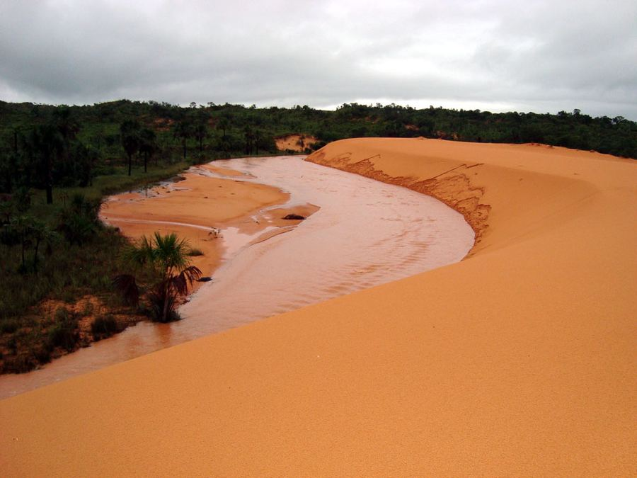
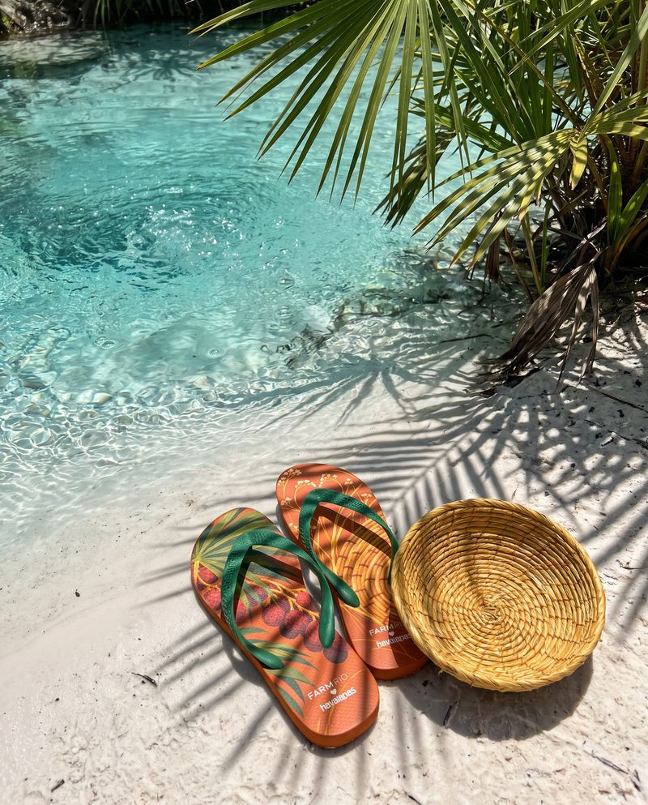

Tocantins
Ouro do Jalapão
O capim que brilha como ouro nas veredas do Jalapão, trançado pelas artesãs da Mumbuca, entre buritis e dunas cor de laranja.
09 / 14 · Norte

o coração
Encontre o coração
Ele não está desenhado em cima de nada. Aparece quando os próprios elementos da cena se encontram. Procure na ilustração e toque nele.
♥ duas hastes de capim dourado que se cruzam


o par
Dois pés, uma história
na palmilha
pé esquerdo com folhas em leque e cachos de frutos do buriti; pé direito com hastes de capim dourado e uma mandala trançada em espiral.
borracha e tira
terracota das dunas ao pôr do sol; tira verde-buriti.
a arte da palmilha
Em díptico

caderno de campo
O Jalapão é de areia cor de laranja, água transparente e capim que brilha como ouro. Nas veredas, o buriti alinha as palmeiras em fila; nos fervedouros, a água borbulha de baixo e não deixa ninguém afundar. Na comunidade quilombola da Mumbuca, as artesãs colhem o capim dourado a partir de 20 de setembro e costuram com a seda tirada do broto do buriti: saem bolsas, mandalas, brincos e chapéus. Ouro que não pesa.
trilha · a Festa da Colheita do Capim Dourado, na Mumbuca · o vento nas dunas · a água borbulhando no fervedouro
A âncora: o capim dourado trançado, saber das artesãs quilombolas da Mumbuca.
pesquisa de campo
Na rua, antes do desenho




campanha
O par no lugar


o que ficou de fora
O que a gente evitou
- 01
Deserto genérico: o Jalapão é Cerrado, com água por todo lado.
- 02
Copiar peças da Mumbuca: cada mandala e bolsa é autoral.
- 03
Agro e boiada como identidade única do estado.
fotos de campo deste estado
 ← Pará
← Pará